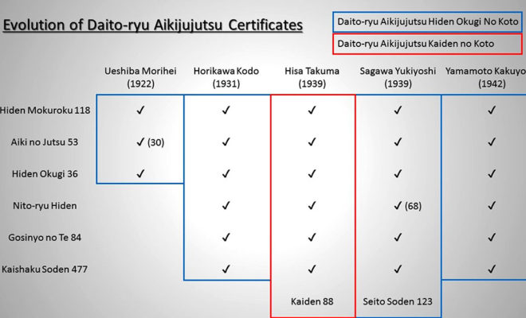
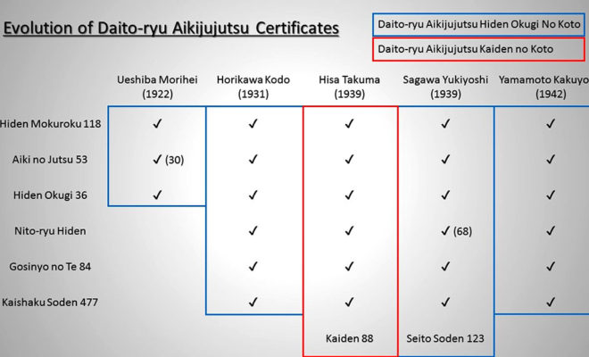

| Hiden Mokuroku | Aiki No Jutsu | Hiden Okugi | Nito Ryu Hiden | Gosinyo No Te | Kaishaku Soden |
| 118 | 53 | 36 | 68 | 84 | 477 |
Existen 2,884 técnicas en Daito-ryu que incluyen técnicas para uke-tori sentados, uke de pie-tori sentado, uke-tori ambos de pie y las defensas contra agresiones desde la espalda.Tradicionalmente se practican en forma secuencial, no permitiendose avanzar al siguiente nivel hasta que no se demuestre maestría en lo que se practica. Al finalizar cada nivel se recibe un certificado que lista todas las técnicas dominadas.
El primer nivel de técnicas (shoden waza) se enfoca principalmente en el balance, la respiración, el desequilibrio, la distancia, la oportunidad, la atención y la acción sobre puntos sensibles y articulaciones. El segundo grupo de técnicas conocido como aiki-no-jutsu maneja el concepto del flujo de energía y coordinación.
En 1989, la salud del Soke Tokimune Takeda se deteriora rápidamente delegando en Kato Shigemitsu todas las materias administrativas y de enseñanza del dojo central del Daito-Ryu.
En abril de 1991 Tokimune ya con su salud seriamente comprometida cita a una reunión en el dojo a la cual concurren 66 de los más antiguos instructores que se autodenominaron “Seishin” (corazón puro) y Tokimune plantea que sus deseos son que sus dos hijas Oshima Kyoko y Yokoyama Nobuko le sucedan hasta que un nieto de su familia alcance el nivel necesario para ocupar su lugar, ambas hijas tienen varones pero solo uno, Oshima Hitoshi, ahora Takeda Hitoshi por la ley japonesa que permite el cambio de apellidos para salvaguardar la línea principal de familias tradicionales, ha aparecido junto a Takeda Tokimune en las últimas demostraciones realizadas.
En 1992 su hermano menor Takeda Munemitsu (武田宗光) le solicita que le firme un documento en donde lo designa como nuevo Sôke del Daito-ryu, Tokimune firma el documento pero sus hijas posteriormente consideran la autorización como una estafa ya que por su enfermedad Tokimune no era consciente de sus implicaciones.
Sin embargo en muchos dojos de Europa y EE. UU. aceptaron a Munemitsu como nuevo Soke de Daito-Ryu Aikijujutsu.
En 1993 legalmente la hija menor de Tokimune, Yokoyama Nobuko (横山信子), es declarada apoderada y Tokimune es internado en el hospital. Durante su tratamiento Nobuko Yokoyama, con la asistencia de Katsuyuki Kondo (ya certificado en ese momento por el propio Tokimune como Soke Dairi), representa los intereses de la familia Takeda en el Daito-ryu Aikijujutsu adoptando la posición de directora del Daitokan.
El 2 de diciembre de 1993 Takeda Tokimune fallece en el hospital y Yokoyama Nobuko designa a Kondo Katsuyuki como encargado del Hombu Dojo Daitokan desplazando a Shigemitsu Kato (5th dan) y Matsuo Sano en el puesto de Kangicho. Ambos maestros junto con una parte de los Seishin se retiran del Daitokan abriendo un nuevo dojo en Abashiri cerca del puerto pasando a llamarse Nihon Daito Ryu Aikibudo Daito Kai (日本大東流合気武道大東会) organización que actualmente tiene filiales en Italia, EE. UU. y Brasil.
Posteriormente Yokohama Nobuko renuncia a su posición como directora del Daito-ryu y la posición que es reclamada por su hermana, Kyoko Oshima cuyo esposo Oshima Masanobu que cambia su apellido a Takeda se declara Soke de la Takedaden Daito Ryu Aikibudo lo que no es aceptado por los maestros ahora agrupados en la Nihon Daito Ryu Aikibudo Seishin Kai Association ni por los que siguen en el Daitokan bajo la dirección ahora de Katsuyuki Kondo pero si por muchos otros practicantes.
Mientras ambas hijas discuten la conveniencia de registrar legalmente como marca el MON de la familia y el nombre Daito-ryu Aikijujutsu, Kondo Katsuyuki lo registra a su propio nombre. Acción que Takeda Masanobu impugna legalmente sin éxito.
Luego de diferentes instancias Kondo Katsuyuki funda la Daito-ryu Shimbukan de la cual se autodesigna como máxima autoridad, en ese carácter decide cambiar la ubicación del hombu de la Daito-ryu del Daitokan en Abashiri a su propio dojo en Tokio y solicita al Seishin abandonar el Daitokan lo cual no es aceptado por ellos que no reconocen los títulos de Kondo.
Un acercamiento historico a este tradicional arte marcial japones

 
